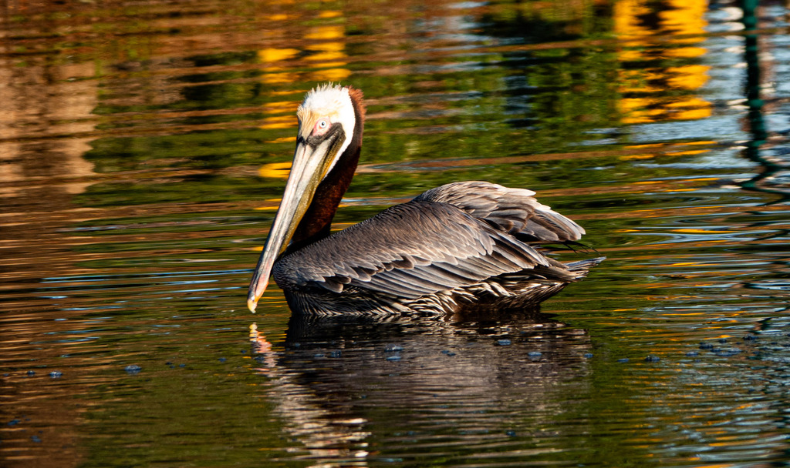

📷 Photo by Rob Carr · CC-BY-NC · via iNaturalist · 📅 Mar 22, 2025
Quick Hits
- The brown pelican is the one that dives — plunging headfirst from the air into the water to scoop up fish, unlike the white pelican which scoops from the surface.
- It is a conservation comeback: nearly eliminated by DDT in the 1960s and 70s, it recovered after the pesticide was banned and was removed from the endangered list in 2009.
- The massive bill and expandable throat pouch can hold roughly three gallons of water — which it drains before swallowing the fish.
- Despite the big bill, an adult weighs only about eight pounds — surprisingly light for a bird that looks so heavy.
How to Spot It
Size
Large, heavy-bodied, with a massive bill and throat pouch.
Color
Gray-brown body, dark belly, white to yellowish head. Breeding adults show a dark chestnut nape.
Flight
Flies low over water in lines, alternating flaps and glides.
Feeding
Plunge-dives headfirst — the only pelican that does this.
Voice
Generally silent except at the nest; adults make low grunting sounds.
What to Look For
A large brown-and-gray pelican flying low over water or plunge-diving. Distinguished from the white pelican by color and the diving behavior.
What It Eats
Fish — caught by plunge-diving from the air.
Where & When
Where in the park
Overhead or on nearby water — a flyover visitor to the park, not a pond bird. More likely near the coast.
When to see it
Year-round along the coast; occasional flyovers at the park.
Watching It Respectfully
Observe and enjoy.
Photo Credits
- © Rob Carr (CC-BY-NC), via iNaturalist